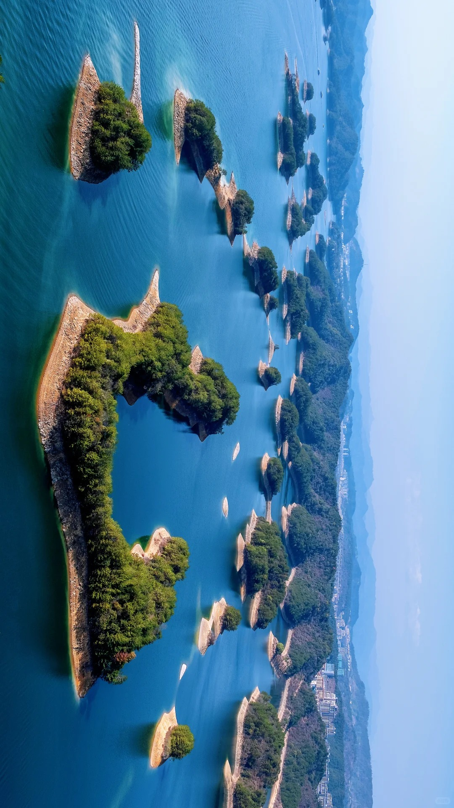
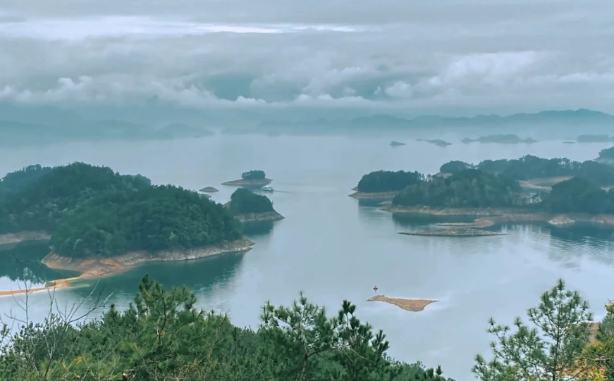
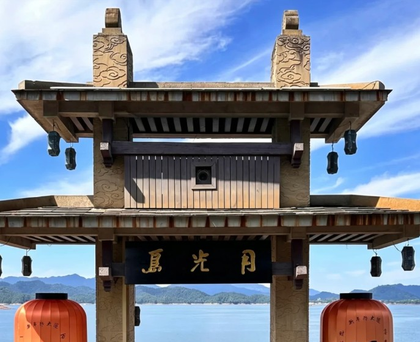
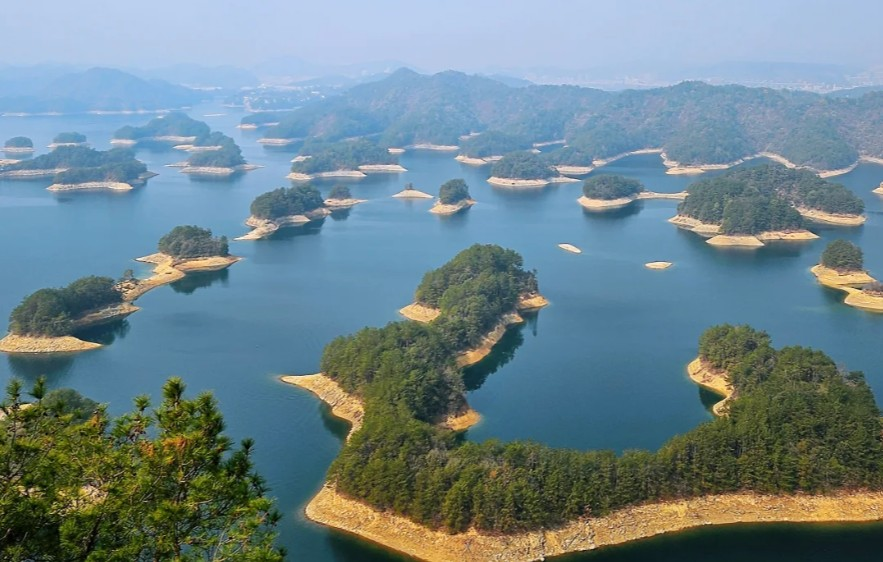

国家5A级景区 | 国家级森林公园 | 世界三大千岛湖之一

千岛湖原名新安江水库，坐落于杭州市淳安县，小部分延伸至建德市西北，是新中国首座自主设计建造大型水电站蓄水形成的人工湖，国家 5A 级景区、国家级森林公园，与加拿大金斯顿千岛湖、湖北仙岛湖并称世界三大千岛湖。
建造历史：1955 年动工，1959 年蓄水、1960 年完工；1984 年正式定名 "千岛湖"。
水域规模：正常水位湖面约 580 平方公里，湖长 150 千米，平均水深 30.44 米，蓄水量 178 亿立方米；最高水位时，面积超 0.25 平方千米的岛屿共 1078 座，因此得名千岛湖。
水质名片：常年保持国家 I 类一级水体，能见度 7-12 米，被誉为天下第一秀水，是农夫山泉核心取水地，也是杭州、嘉兴等城市重要饮用水源。
生态环境：湖区森林覆盖率 82.5%，动植物资源丰富，有百余种淡水鱼、多种国家级保护野生动物。
修建水库时，淳安贺城、遂安狮城两座千年古城连同近千个村落沉入湖底，29 万居民整体搬迁。水下完整保存明清街巷、牌坊、民居，是国内罕见水下古建遗址；岸边复刻文渊狮城，还原古城风貌，是千岛湖独有的人文记忆。



古村落：芹川古村，保存完整徽派古民居，小桥流水、民风古朴；
渔文化：千年新安江渔乡，特色美食千岛湖有机鱼头、清水鱼、鱼干；
度假业态：环湖遍布高端度假酒店、露营基地，适合休闲度假、水上骑行、环湖自驾。
千岛湖兼具水利发电、防洪蓄水、城市供水、生态保护、观光度假多重功能；浙江设立淳安特别生态功能区，坚持生态优先保护一湖碧水，是长三角知名生态休闲旅游目的地。